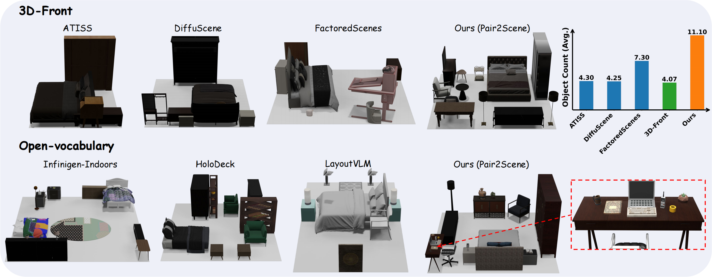
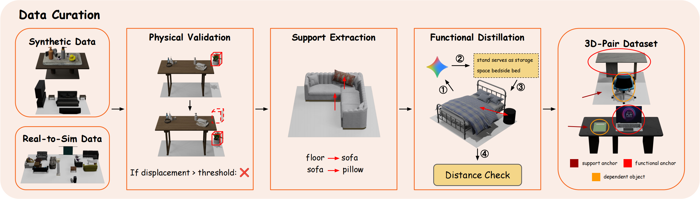
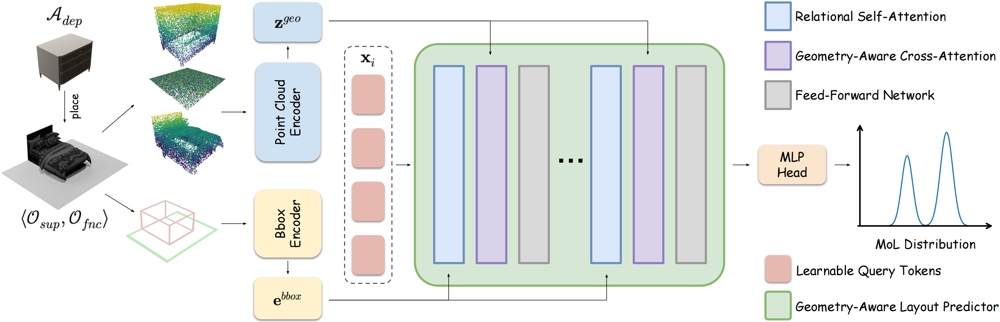
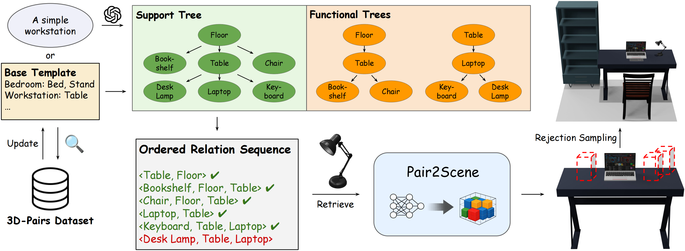
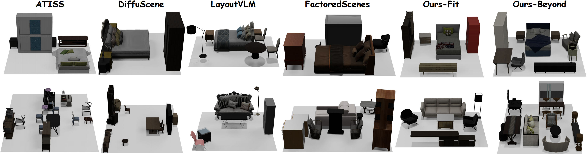
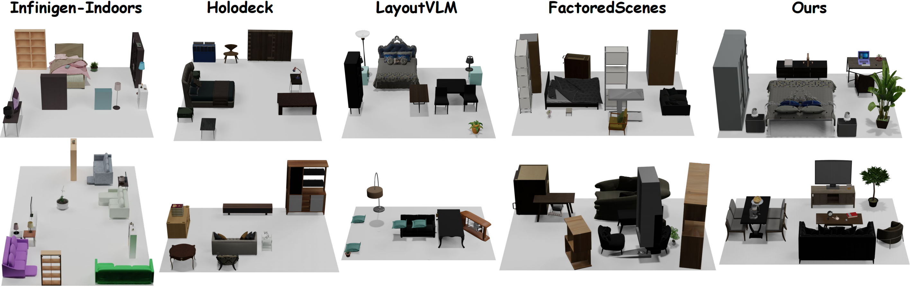

Generating high-fidelity 3D indoor scenes is a critical task in computer graphics, yet it remains challenging due to data scarcity and the complexity of spatial relationships. Current generative methods often struggle to scale to dense scenes beyond the training distribution or rely on language models that lack precise spatial reasoning. In response, we propose Pair2Scene, an innovative framework for scene generation based on learned procedural rules. The core observation of this research is that object placement in indoor environments depends primarily on local dependencies rather than redundant global distributions. Pair2Scene captures two types of inter-object relationships: physical support and semantic functional connections, establishing a network model capable of predicting the spatial distribution of dependent objects based on the geometry of anchor objects. By training on the 3D-Pairs dataset, this framework can recursively apply the model during inference to generate complex environments that are physically plausible and semantically logical.

To overcome the limitations of data sparsity and constrained distributions in existing 3D scene datasets, we decompose holistic scenes into local object pairs. We present the 3D-Pairs Dataset, curated via an automated pipeline that extracts two key relationships: Support Relations (based on collision detection and gravity projection) and Functional Relations (based on co-occurrence and proximity). This transition from "complete scenes" to "atomic pairs" scales the dataset from thousands of scenes to tens of thousands of relational instances. This approach enables the model to learn universal placement rules that generalize across diverse environments, significantly enhancing its ability to synthesize complex, Out-of-Distribution scenes.

The core model of Pair2Scene consists of a geometry-aware layout predictor that incorporates a point cloud encoder to extract fine-grained geometric features of assets. By utilizing a Point-MAE pre-trained model, our system perceives the physical properties and orientation of objects, enabling more precise placement prediction than methods relying solely on semantic categories.

In the inference pipeline, we represent the scene structure as a hierarchy of support and functional trees, serialized into sequences of ordered relationship tuples. This local rule modeling approach not only alleviates data scarcity but also allows the model to generate scenes more complex than the training data by combining various local rules. To ensure global consistency, we employ collision-aware rejection sampling and gravity simulation during inference, effectively transforming local conditional distributions into valid global scene configurations.

3D-Front Only Setting

Multi-Source Setting
Extensive experiments on 3D-Front and multi-source datasets demonstrate that Pair2Scene significantly outperforms existing learning-based methods and large language model baselines in generating complex environments. Furthermore, Pair2Scene's layouts are more aligned with human common sense in terms of semantic alignment, physical plausibility, and scene complexity. Notably, the Ours-Beyond variant exhibits superior generalization, producing high-quality dense scenes with object densities far exceeding the training distribution while maintaining zero floating rates and extremely low collision rates.
3D Front Only Setting:
Multi-Source Setting:
More Scene Types: